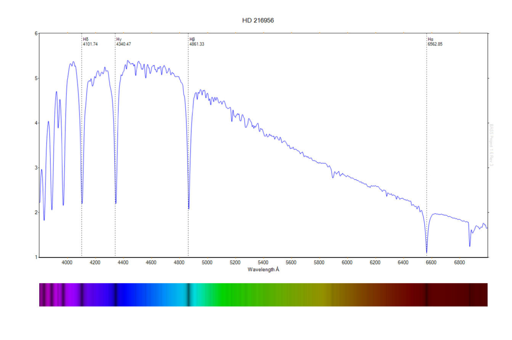
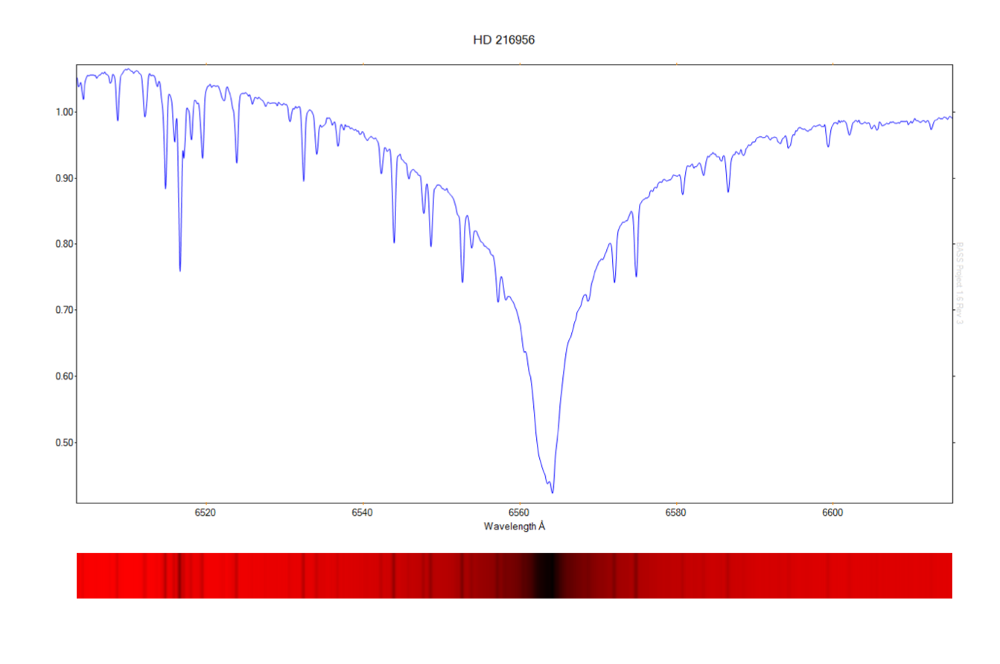
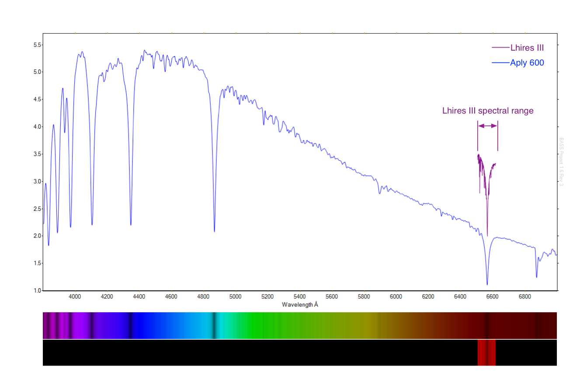
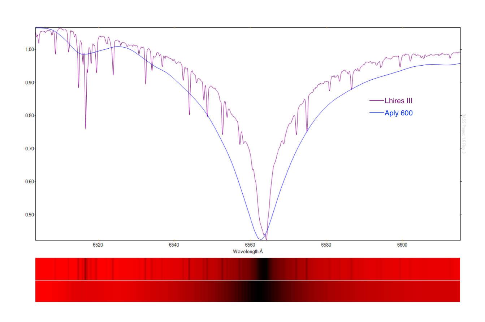

Several spectra of the star Fomalhaut acquired simultaneously with Lhires III and Alpy 600 spectroscopes illustrate the difference between high resolution and low resolution spectroscopy.


The following low resolution spectrum of the type A4V star Fomalhaut is taken with the Shelyak Alpy 600. It shows the broad black body profile and prominent hydrogen-Balmer lines typical of an A type star across a visible wavelength range of 3200Å.
By comparison, the following spectrum centred on the H-a region is taken with a Shelyak Lhires III. Using the same size CCD Sensor as that of the previous Alpy 600 image, this high resolution instrument shows a narrow range of only 112Å but in much greater detail - even at medium resolution. The prominent absorption features are atmospheric telluric lines.
The following chart shows the relative range difference of both spectra displayed on the scale of the Alpy low resolution spectrum.  